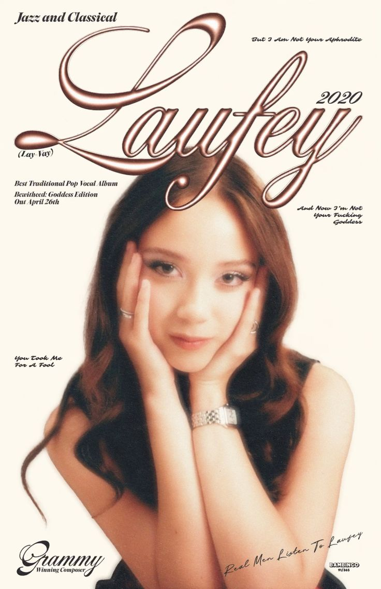
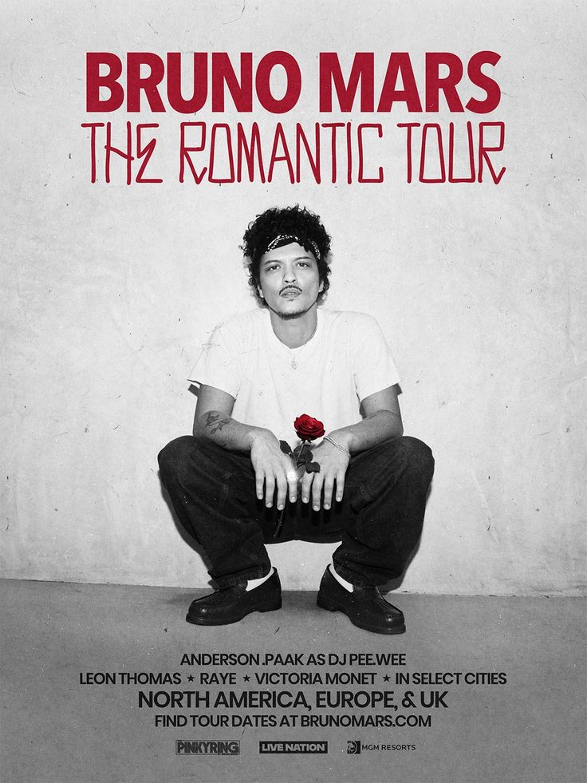
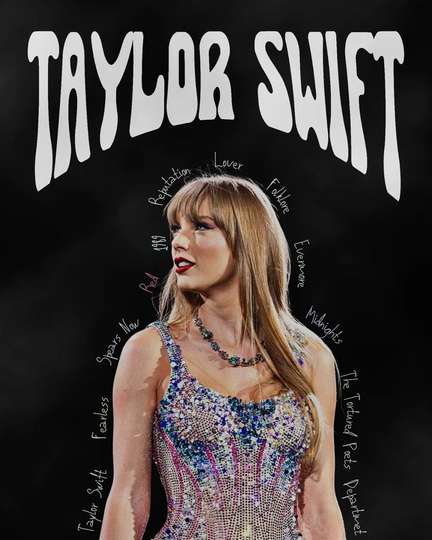
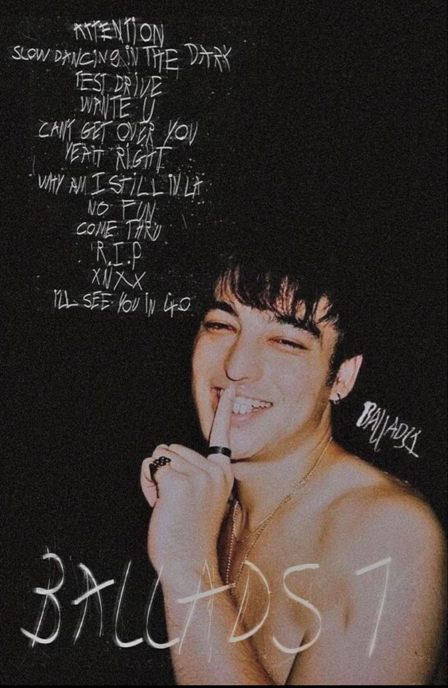

A PERSONAL MUSIC VLOG · TEAM ALBATOTERS
Every mood has
a
soundtrack.
A little corner of the internet for the songs we replay, the artists we love, and the memories that stay with us. Find your mood and let the music speak.
START WITH A FEELING
What are you feeling?
Choose a mood and discover a matching listening direction.
THE PEOPLE BEHIND THE PLAYLISTS
Featured artists.
Seven artists, different sounds, countless feelings.




FROM THE LISTENING JOURNAL
Music stories.
Songs for a late-night ride
Some songs feel different when the city gets quiet. This playlist is for long roads, window views, and thoughts you cannot quite explain.
♫ The Weeknd · JojiMy comfort playlist
A small collection of familiar sounds for slow mornings, busy afternoons, and days when you need a little reset.
♫ Laufey · Taylor SwiftMusic that feels like home
There is something special about hearing a Filipino song that puts a memory into words. These are the tracks I keep coming back to.
♫ Arthur Nery · December Avenue